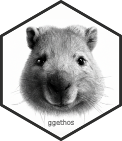

Align Ethogram
align_ethogram.Rd`r lifecycle::badge("experimental")`
Usage
align_ethogram(data, by, mode = c("zero", "time", "midnight"))
align_ethogram.Rd`r lifecycle::badge("experimental")`
align_ethogram(data, by, mode = c("zero", "time", "midnight"))